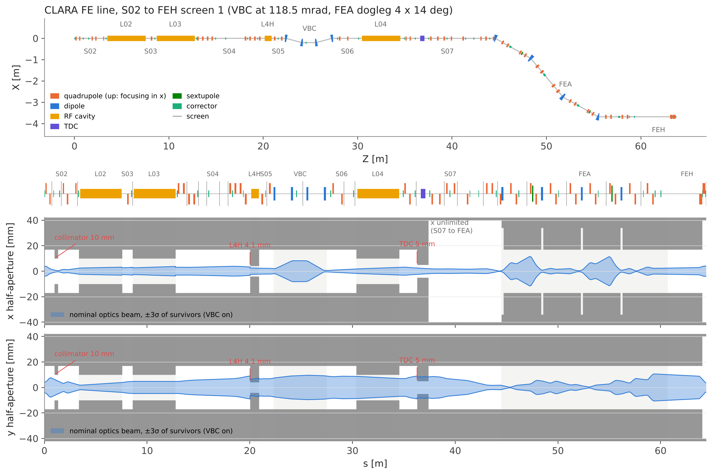
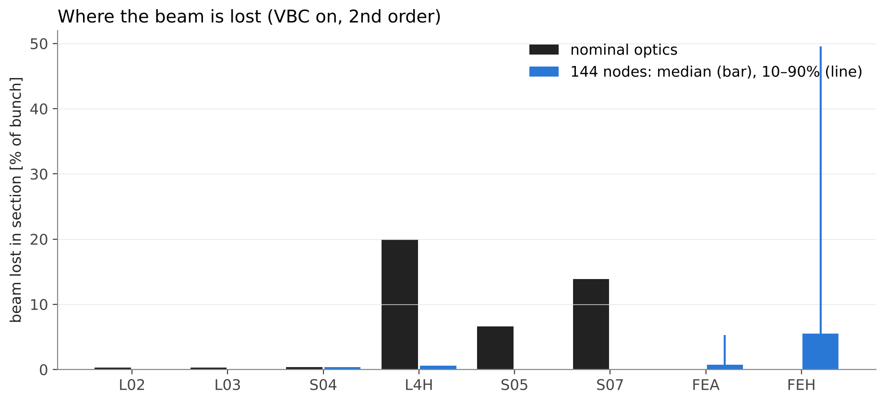
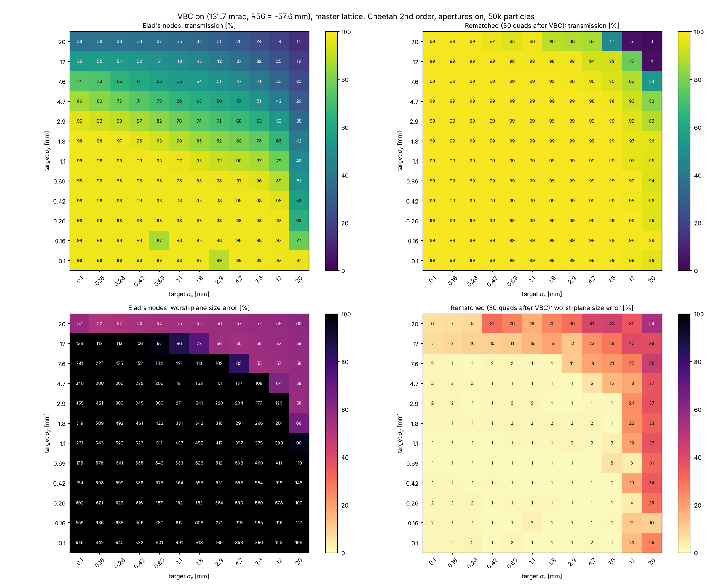
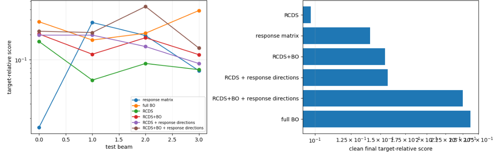
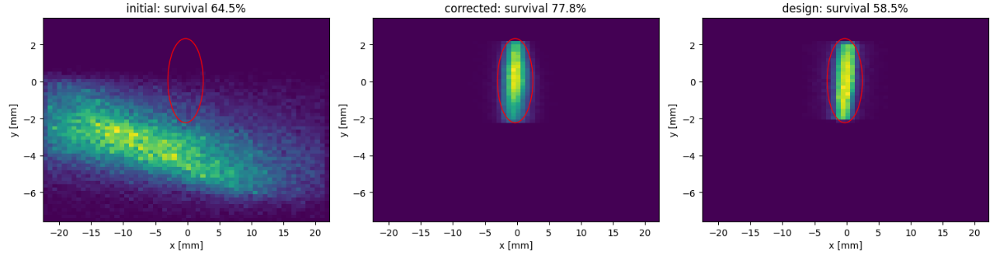

What we set out to do
Steer through the whole CLARA lattice with optimisation and RL, and get the closest sim2real match we can.
- One line,
cla_s02_sim_aper_01to the FEH screen: 64.4 m, 655 elements, 282 apertures. - A request arrives as four numbers — position and spot size
(μx, μy, σx, σy)
at
cla_feh_dia_scr_01— with the spot anywhere from 0.1 to 20 mm in each plane. - Every episode is a different day on the machine: its own beam, its own survey error, its own request.
- The agent sees what an operator sees: BPM centroids, and screens that cost a shot.
- Shots are the currency. Model time is free. That one sentence shapes the whole pipeline.
The line

Floor plan (VBC chicane, FEA dogleg), the lattice, and the x/y half-apertures, with the nominal ±3σ envelope. Pipe 17 mm; L4H iris 4.12 mm; TDC 5 mm.
Why it is not easy
- Two bottlenecks: the 4.12 mm L4H iris and the 5 mm TDC aperture in S07.
- With the nominal optics the vertical beam (±3σ ≈ 9 mm) is larger than both, so only 59% of the bunch reaches the screen — and it is lost in the middle of the line.
- Apertures make the objective a staircase: a particle is in or out, so there is no slope to follow.
- Two orders of magnitude of target spot size means two orders of magnitude of optics.
- And the model is not the machine.
VBC at 118.5 mrad; at the 131.7 mrad default it is 72%.

How we split it
| Francesco | Sim2real matching with tomography, beam optics, multi-fidelity BO. Transmission and the VBC-on rematch. |
| Eiad | Beam optics and SVD: a good reference tune, and which quadrupoles and correctors actually matter for a given target. |
| Ivan | Numerical optimisation for S04, then run against Eiad’s and Francesco’s optics. |
| Manuel | A robust measure for real screen images — and a DALIA job that pushed the whole 0.8 TB of captures through it. |
| Amy | The framework and simulation environment, and a model-based RL agent built against it, driving Eiad’s SVD controls. |
Five people, seven workstreams, one weekend.
The pipeline
Everything that can happen in the model happens in the model. The machine is only asked when it has to be.
1. The episode
SimEnvdeals a new day: a realistic beam, the lattice with small perturbations, a survey error, and a request.- Cheetah 0.8.4, second-order tracking, apertures on, 200k particles for the reference work and 50k for the sweeps.
- The agent sees what an operator sees: BPM centroids, and screens that cost a shot.
Cost: the 282 aperture elements break Cheetah’s map fusion: a track costs 90 ms instead of 37. Everything downstream is paced by that.
2. Nominal optics from the lookup
- A matched family over a 12×12 grid of target sizes, 0.1 to 20 mm, log spaced. Each node sets all 46 quadrupole k1 values.
- 42 quadrupoles are a shared prefix that carries the beam through the apertures; the final focus does the rest.
- Re-matching removes the L4H and TDC losses outright: median transmission 92.7% with the VBC on, 97% with it off.
- No shots, no machine time. It hits the requested size to a fraction of a percent in its own model.

Cost: the family was matched with the VBC and L4H off. With the machine’s VBC on, the large-spot corner loses up to 80% of the beam.
2b. …which is why we rematched it
- VBC at the measured maximum compression into FEBE: 131.7 mrad, R56 = −57.6 mm.
- Keep the 42-quadrupole prefix, refit the 30 quadrupoles after the VBC per node — L-BFGS through differentiable Cheetah.
- Only a handful of magnets do the work: S06 Q01/Q02 for the VBC, FEA Q15/Q16 and FEH Q1/Q2 for the size. The rest are degenerate.
| Before | After | |
|---|---|---|
| Median transmission | 89% | 99% |
| Median size error | 285% | 1.6% |
96 of 144 nodes at T ≥ 95% and within 5% of target.

3–4. Steering: SVD, then one shot
- SVD of the corrector-to-BPM response at the loaded optics ranks the corrector planes; invert the leading ones and correct in one shot.
- On the xsuite model: one BPM shot takes the orbit from 2–4 mm rms to about 0.15 mm.
- Fitting first is better still: stepping each quadrupole by 5 A recovers 99 µm rms quadrupole offsets to 6 / 15 µm (x / y) from BPMs alone.
- Typically 1 iteration in the pipeline, 4 in the worst case.
Cost: not enough on its own for 80–400 µm spots: the centroid at the screen still sits at 0.4–1.6 mm depending on the survey error, and the residual is dominated by quadrupole offsets. Good opening move, not an answer.
5. The coupled control set
- The same trick again, but for focusing: SVD of d ln(rms size) / d k1 at every screen and the readout, over all 46 quadrupoles — and of the centroid response over all 58 corrector planes.
- Each magnet gets a score √(Σi si2 Vij2) over the modes holding 99% of the squared response, so the control set is ranked, not guessed.
- 1.5 to 2.5 minutes per target on the error-free model. Zero environment steps.
Cost: the centroid SVD ranks the last two correctors near the bottom, because they move nothing but the final screen — which is exactly the property we need to place the spot. The ranking has to be read with the objective in mind, not taken literally.
Comparison and applicaiton of different optimization methods
Different methods applied to a sigle section

Response method applied segment-by-segment

6. Tweak the tune
The twin
A differentiable Cheetah copy of the environment’s own lattice. System identification fits the episode’s beam — and optionally the survey error — to the shots taken so far.
The planner
CEM to explore, Adam to refine, anchored on the last measurement:
ŷ(δ) = ymeas + [ twin(k+δ) − twin(k) ]
A model wrong by a constant still predicts the effect of a move, and anchoring cancels the constant exactly.
Two things that mattered
- Steps measured in effect, not in units. One batched track calibrates every knob so that a step changes the reading by half a requested spot. 0.1 mrad is a huge kick near the injector and nothing a metre before the screen.
- Hard walls, soft gradients.
twin._aperturetakes its value from the hard edge and its gradient from a sigmoid. Blurring the wall outright moved the predicted loss from 0.00 to 114.7 and the fit walked off chasing it.
7. Reading the screen
- Threshold each frame at a tenth of its own peak, then take the intensity-weighted centroid and rms from the row and column sums — no full coordinate grids, four scalars off the device.
- Per-camera µm/pixel calibration for all 28 screens, so the numbers come out in metres.
- Run over the 0.8 TB of real CLARA HDF5 captures as a DALIA job.
- The same measure drives the agent in simulation. The benchmark scores the particle moments; the agent never sees them.
Cost: it costs accuracy and it costs speed. It is also the only version of the loop that could be moved onto the machine unchanged.
Does it work?
| Mismatch | Shots | Transmission | Within 50% | |
|---|---|---|---|---|
| Do nothing | 9.97 | 0 | 74% | 0% |
| Optics only | 7.14 | 1 | 97% | 0% |
| Optics + steering | 6.84 | 5 | 98% | 0% |
| Full pipeline | 1.29 | 26 | 82% | 75% |
8 episodes, mismatch in units of the requested spot size, median score 0.98. 63% of episodes land within 25%, 25% within 10%.
- The lookup alone is worth most of the transmission and none of the accuracy.
- Steering alone is worth almost nothing here — the reference optics already delivers beam to every BPM, so there is nothing to recover.
- The last stage is what closes the gap, and it costs about twenty shots.
The choices that cost us the most
- Two copies of the lattice. The twin was built from a stale copy of the line. The two agreed until the VBC was turned on and only one was updated — then the twin disagreed with the machine by 1.5 mm at the readout, and the planner spent whole episodes optimising a different accelerator. There is now a smoke test holding them to 10−4 µm.
- Matching against a machine we no longer had. The optics family was matched with the VBC and L4H off. Good physics, wrong machine; it took a 30-quadrupole rematch to get it back.
- Clipping the cost at the benchmark’s scale. The benchmark stops counting at ten spot sizes. An untuned machine sits at seventy, so a clipped cost is flat across the entire region where tuning happens.
- Splitting by workstream, not by interface. Everything converged in the last day. It worked — but see the first two bullets.
What we would do next
- Close the loop on stage 1. Re-run the optics lookup against the beam the system identification actually fitted, rather than the nominal beam it assumes, and reload. Another 40 s of model time, no extra shots. The size residual is the binding constraint, and this is the most promising thing we have not tried.
- A Dyna layer. The twin is a free simulator: randomise the latent, roll out inside it, and train a policy that proposes the first move. Twenty shots of MPC become a few shots plus a refinement.
- Fit the survey error by default, not as a flag. A misalignment does things no launch offset can imitate.
- Check it against xsuite. Everything here is Cheetah, one nominal beam, no jitter or ripple. These are ideal numbers.